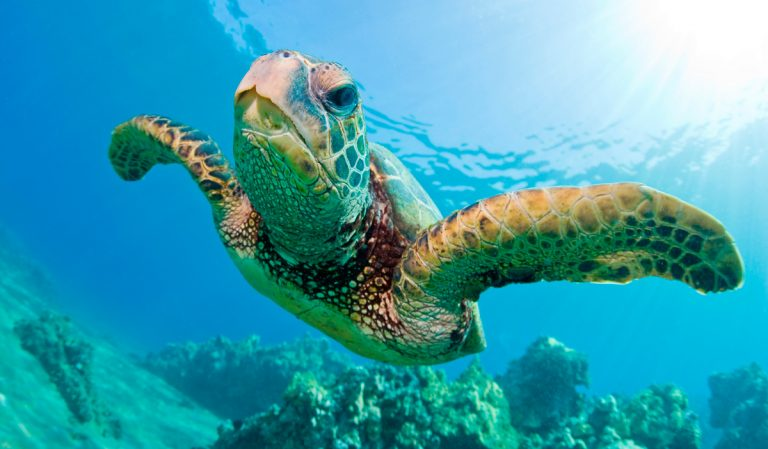

<ion-view view-title="BiologyApp">
  <ion-content class="padding">
    <h2>Biology App</h2>
      <center>
        <iframe src="https://www.youtube.com/embed/m8iuW-qtPBQ" frameborder="0" allow="accelerometer; autoplay; encrypted-media; gyroscope; picture-in-picture" allowfullscreen></iframe>
        <br><br>
          <div style="background: rgba(0,0,0,0.2);">
            <div id="stage">
              <div id="spinner" style="text-align: center; color: #fff;">
                <h1><span class="blue">1</span><span>_____________ </span><span class="pink">1</span></h1>

                <h1><span class="blue">2</span><span>_____________ </span><span class="pink">2</span></h1>

                <h1><span class="blue">3</span><span>_____________ </span><span class="pink">3</span></h1>
                <h1><span class="blue">4</span><span>_____________ </span><span class="pink">4</span></h1>

                <h1><span class="blue">4</span><span>_____________ </span><span class="pink">5</span></h1>

                <h1><span class="blue">6</span><span>_____________ </span><span class="pink">6</span></h1>
                <h1><span class="blue">7</span><span>_____________ </span><span class="pink">7</span></h1>

                <h1><span class="blue">8</span><span>_____________ </span><span class="pink">8</span></h1>

                <h1><span class="blue">9</span><span>_____________ </span><span class="pink">9</span></h1>

              </div>
            </div>
  </ion-content>
</ion-view>

        <div class="row">
          <div class="col-md-3"><h1 class="titulo"></h1></div>
          <div class="col-md-6"></div>
          <div class="col-md-3"><h1 class="titulo"></h1></div>
        </div><br>
        <div class="row">
          <div class="col-md-12">
            
          </div>
                
        </div>
        <div class="row">
          <div class="col-md-12">
            <p class="parrafo">La biología (del griego βίος [bíos], «vida», y -λογία [-logía], «tratado, estudio, ciencia») es la ciencia que estudia a los seres vivos y, más específicamente, su origen, su evolución y sus propiedades, nutrición, morfogénesis, reproducción (asexual y sexual), patogenia, etc. Se ocupa tanto de la descripción de las características y los comportamientos de los organismos individuales, como de las especies en su conjunto, así como de la reproducción de los seres vivos y de las interacciones entre ellos y el entorno. De este modo, trata de estudiar la estructura y la dinámica funcional comunes a todos los seres vivos, con el fin de establecer las leyes generales que rigen la vida orgánica y los principios de esta.</p>
          </div>
        </div>
        <div class="row">
          <div class="col-md-12">
            
          </div>
        </div>
        
      
      

    </center> 
    

    
  </ion-content>
</ion-view>
